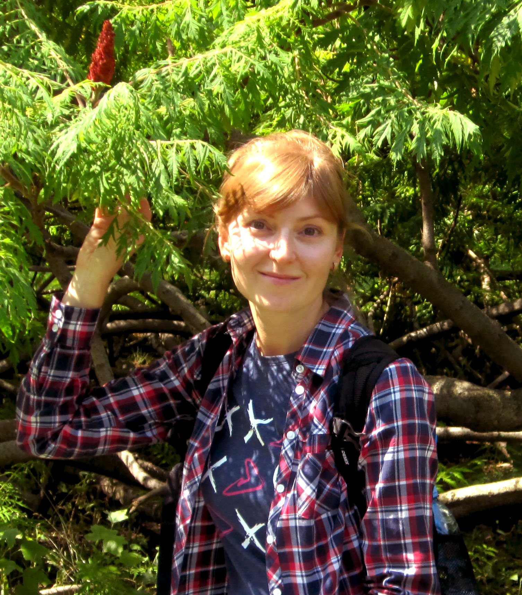

Я — інженер-металознавець із понад 20-річним досвідом роботи у технічній сфері. У своїй професійній діяльності займаюся аналізом структури та властивостей матеріалів, роботою з технічною документацією та контролем якості. Маю науковий ступінь кандидата технічних наук.
Наразі опановую напрямок Software Testing (QA), оскільки мене цікавить забезпечення якості програмних продуктів. Досвід інженерної роботи допомагає швидко аналізувати вимоги, знаходити невідповідності та підходити до тестування структуровано.
Моя мета — розвиватися у сфері QA та застосовувати свій технічний бекграунд у галузі ІТ.
У вільний час займаюся йогою та саморозвитком, що допомагає підтримувати концентрацію, уважність та організованість.
Під час опанування професії QA-інженера я знайшла в Інтернеті вдалі ілюстрації, що допомагають краще запам’ятати матеріал і піднімають настрій. Шпаргалка начинающего тестировщика